| ANALYSIS` SYMBOL |
JonesParameterPlot
|
Plot a given property in a Jones Pupil Inputs: jonesPupil - {JonesMatrices,spacing, center,axes, λ} the Jones Pupil data structure. JonesMatrices - {n, m, 2, 2} dimensional array, where {n, m} is the diemensionality of the original ray grid spacing - average grid spacing of the JonesMatrices in [mm]. center - the center location of the Jones Pupil in global coordinates {x, y, z} in [mm]. axes - the direction of the wavefront normal at the center location. λ - the wavelength of the Jones Pupil in [μm]. func- function to operate on a complex 2 by 2 jones matrix *The function must take a complex 2 by 2 matrix and return a real number Outputs: Plot of the Jones Pupil Property |

The parameter function
| Input | Jones Matrix | A 2 by 2 complex matrix {{Ja,Jb},{Jc,Jd}} | |
| OutPut | Real Number | Must return a real number for any input jones matrix | |
| Type | RefLink[Function,paclet:ref/Function] | A pure function, a custome function, or a mathematica function can be use |
Plot Options
| Any options from the PlotFunc can be used | RefLink[ListDensityPlot,paclet:ref/ListDensityPlot] •RefLink[ListPlot3D,paclet:ref/ListPlot3D] •RefLink[ArrayPlot,paclet:ref/ArrayPlot] • RefLink[ListContourPlot,paclet:ref/ListContourPlot] • RefLink[ListPointPlot3D,paclet:ref/ListPointPlot3D] |
Custom Functions
| Opts`Zoom | 0 | The central number of pixels to plot | |
| Opts`PlotFunc | RefLink[ListDensityPlot,paclet:ref/ListDensityPlot] | Choose the plotting function either ListPlot3D, ListDensityPlot, or ListContourPlot (Default: ListContourPlot) | |
| Opts`Color | Rainbow | The color scheme of the plot | |
| Opts`Scaling | Full | Asign the plot range to the color scheme. Full => plot all matrix elements on the same scale Scaled => Plot each element on a seporate scale {min,max} => Plot all elements from min to max |

Basic Examples (2)
Use the JonesParameterPlot function to plot the retardance in a Jones Pupil
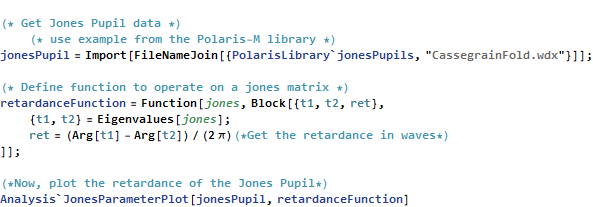
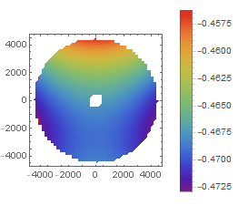

Any function that returns a real number can be used to generate a parameter plot. Here, the Mathematica function Det is used.
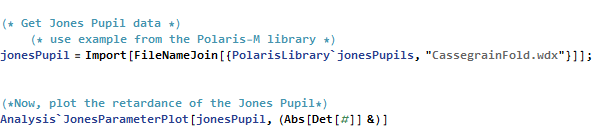
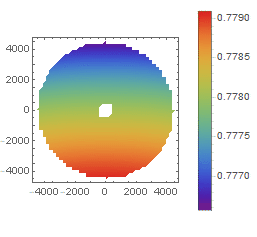

Options (5)
Plot (1)
All the options available to ListPlot3D, List DensityPlot3D and ListContourPlot are available to JonesParameterPlot.
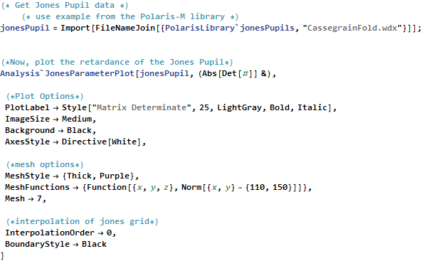
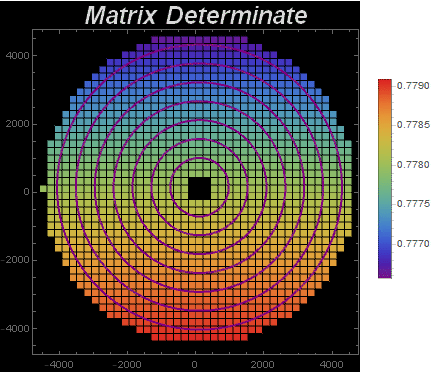

Specific Options (4)
There are several plotting routines available for the Jones Parameter
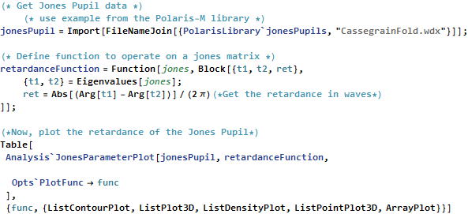
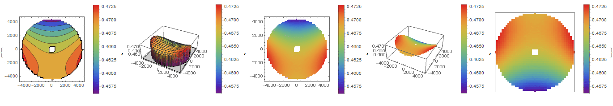

Any of the built in color schemes can be used.
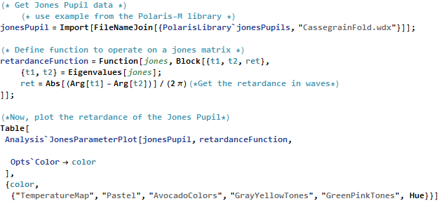
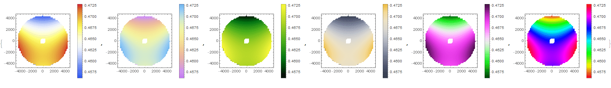
The central part of the Pupil can be plotted with Zoom.
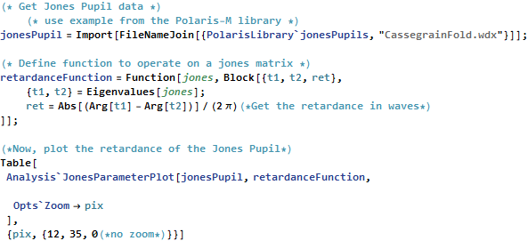
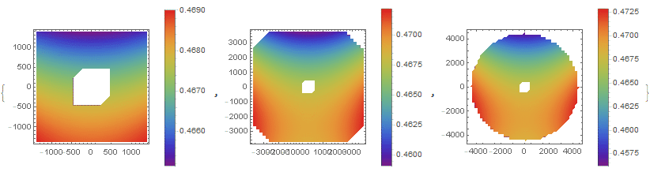
Different plot ranges can be used with the option Scaling.
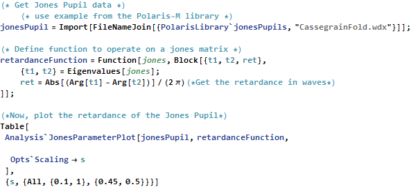
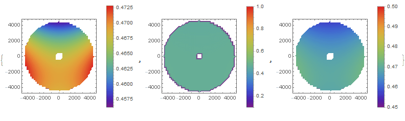


•  •
•  •
•  •
•